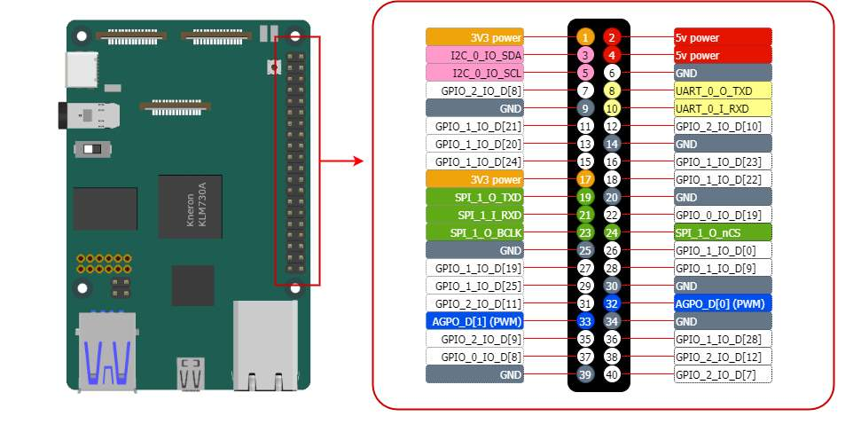
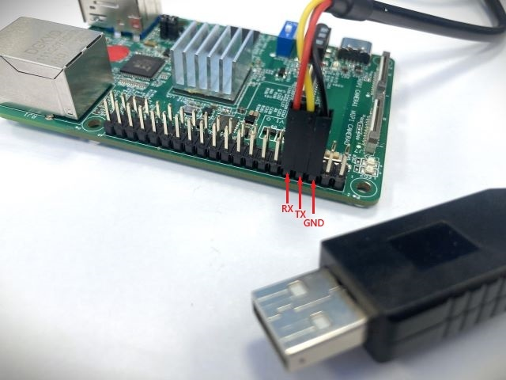
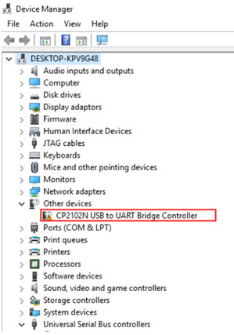
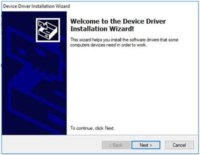
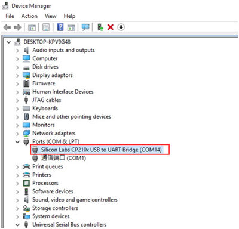

The 40-pin header connector¶
On KNEO Pi board, you can find a 40-pin header. The pin headers have a 0.1in (2.54mm) pin pitch. The functions of the General Purpose I/O (GPIO) pins are predefined for KNEO Pi.
Info
In addition to functioning as GPIO inputs and outputs, these pins can be configured for alternate functions (SPI/I2C/UART/PWM/etc.), which vary depending on the specific pin. Configuration methods are detailed in the standard SDK. For advanced configuration options, refer to the full-function SDK page.

Electrical Characteristics of the GPIO Pins¶
Input Properties
| Symbol | Meaning | Description | Value |
|---|---|---|---|
| Vil | Input Low Voltage | Maximum voltage the pin considers as a "Low" signal. | 0.7 V |
| Vih | Input High Voltage | Minimum voltage the pin considers as a "High" signal. | 2.0 V |
| Iil | Input Leakage Current | Small current that may flow into or out of the pin when not actively driven (minimal power consumption). | 836 nA |
Output Properties
| Symbol | Meaning | Description | Value |
|---|---|---|---|
| Vol | Output Low Voltage | Maximum voltage the pin outputs when driving a "Low" signal. | 0.5 V |
| Voh | Output High Voltage | Minimum voltage the pin outputs when driving a "High" signal. | 2.1 V |
| Iol | Output Low Current | Current the pin can source when pulling the signal low (0.5V). | 13 mA |
| Ioh | Output High Current | Current the pin can sink when pulling the signal high (2.1V). | 10.9 mA |
Input/Output Voltage and Current Limitations
- These are 3.3 volt logic pins. A voltage near 3.3 V is interpreted as a logic one while a voltage near zero volts is a logic zero. A GPIO pin should never be connected to a voltage source greater than 3.3V or less than 0V, as this can cause damage to the chip when the input pin internal diodes conduct. Do not source or sink more than 0.5 mA into an input pin.
- To prevent excessive power dissipation in the chip, do not source/sink more current from the pin than its programmed limit. For example, if you have set the current capability to 2 mA, do not draw more than 2 mA from the pin.
- Do not allow any output pin source or sink more than 12 mA.
- Do not drive capacitive loads. Do not place a capacitive load directly across the pin. Limit current into any capacitive load to a maximum transient current of 12 mA. For example, if you use a low pass filter on an output pin, you must provide a series resistance of at least 3.3V/12mA = 275 Ω.
Using GPIO¶
GPIO stands for General-Purpose Input/Output. These pins can be configured as either general-purpose input, general-purpose output, or as one of up to six special alternate settings, the functions of which are pin-dependent.
-
GPIO Direction:
A GPIO pin can be configured as either an input or an output.
- When set as
in, the pin reads the signal levels (high or low) applied externally. - When set as
out, the pin drives the signal levels to connected devices.
- When set as
-
GPIO Value:
A GPIO pin set as input will reflect the state of the connected signal. A GPIO pin set as output allows you to control its state, either high (
1) or low (0).
Understanding the Global GPIO Calculation
In GPIO_2_IO_D[7], the pin is part of GPIO Controller-2 and represents the 7th line.
The global GPIO number is calculated as:
32 * Controller Number + Line Number = 32 * 2 + 7 = 71 (noted as gpio71).
Control via libgpiod-v2 Command-Line Tools¶
This section explains how to control GPIOs on the KNEO Pi using libgpiod version 2 command-line tools. Unlike the deprecated sysfs interface, libgpiod provides a modern and efficient way to interact with GPIOs.
Info
For advanced control, refer to the libgpiod documentation.
Understanding GPIO Numbering¶
Each GPIO pin is associated with a GPIO controller gpiochipX and a line number. The mapping can be found using gpioinfo. Ensure the correct gpiochipX is used when issuing commands.
Checking Available GPIOs¶
-
To list available GPIO controllers:
This will output a list of available GPIO chips (e.g., gpiochip0, gpiochip1, etc.). -
To see the GPIO lines available on a specific chip:
Configuring and Controlling GPIOs¶
Info
The following examples use pin 40, corresponding to gpiochip2, line 7.
-
Set a GPIO as Output and Toggle Its State
Set GPIO high (1)
Set GPIO low (0)
Ctrl+Cto exit the command -
Set a GPIO as Input and Read Its Value
The output will be 0 or 1, depending on the pin's state.
Control via Sysfs Interface¶
The sysfs GPIO interface is typically located at /sys/class/gpio/. Follow these steps to interact with GPIO pins:
Warning
Controlling GPIO via sysfs is deprecated and considered a legacy method. It is recommended to use libgpiod for modern GPIO control.
-
Export the GPIO Pin
This makes the GPIO pin accessible in the sysfs interface. Replace
with the number of your desired GPIO pin. -
Set GPIO Direction
To set the pin as output:
To set the pin as input:
-
Read or Write GPIO Value
To write a value to the pin (when configured as output):
To read the pin value (when configured as input): 4. Unexport the GPIO Pin$ echo 1 > /sys/class/gpio/gpio<gpio_number>/value # Set pin high $ echo 0 > /sys/class/gpio/gpio<gpio_number>/value # Set pin lowWhen you are done using the GPIO, unexport it to release resources:
Two onboard GPIO-controlled LEDs
LED-green: gpio82
LED-blue: gpio83
Using PWM¶
Pulse Width Modulation (PWM) is a technique used to control the amount of power delivered to a device by varying the width of the pulses in a signal. It is commonly used for applications such as:
- Controlling the brightness of LEDs
- Adjusting the speed of motors
- Generating audio signals
In the KNEO Pi platform, GPIO pins (physical pin-32 and pin-33) are configured to function as PWM outputs.
Basic Concepts of PWM¶
- Duty Cycle: The proportion of time the signal is "high" in a single period. A 50% duty cycle means the signal is high for half the time and low for the other half.
- Frequency: The number of times the signal completes a full cycle (high + low) per second, measured in Hertz (Hz).
Control via Sysfs Interface¶
The Linux kernel provides a sysfs interface for controlling PWM. Please use the following steps to control PWM.
-
Locate the PWM Chip and Channel
Each PWM controller is represented as a PWM chip in the
/sys/class/pwmdirectory.
Channels are indexed under the chip. -
Export the PWM Channel
To enable a specific PWM channel, export it:
In this case, 0 refers to the first PWM channel of pwmchip0.Info
KNEO Pi provides 2 channels.
If using
AGPO_D[0](PWM)/physical pin 32,echo 0 > /sys/class/pwm/pwmchip0/export
If usingAGPO_D[1](PWM)/physical pin 33,echo 1 > /sys/class/pwm/pwmchip0/export -
Configure PWM Parameters
Navigate to the PWM channel directory:
Set the period (in nanoseconds):
Set the duty cycle (in nanoseconds):
Warning
The period and duty cycle values must be consistent, with the duty cycle not exceeding the period.
Enable the PWM signal:
-
Disable PWM
To stop the PWM signal, disable it:
If you no longer need the channel, unexport it:
Using UART¶
UART (Universal Asynchronous Receiver/Transmitter) is a hardware communication protocol used for serial communication. It enables two devices to exchange data over a serial connection, commonly used for debugging, connecting peripheral devices, or interfacing with external microcontrollers.
-
Connect the USB-to-TTL serial cable (3.3V) to your computer and the GPIO pin header KNEO Pi.
-
GNDat pin-6,TXat pin-8 andRXat pin-10
Important: USB-to-TTL Serial Voltage Warning
KNEO Pi only supports 3.3V USB-to-TTL serial communication.
DO NOT connect a 5V TTL device, as this may permanently damage the board.A 3.3V USB-to-TTL serial cable is included in the box. If you choose to use a different serial adapter, ensure it operates at 3.3V TTL levels.
Install Driver for CP2102N USB-to-UART Chip on Windows
The USB-to-TTL serial cable included in the box features an embedded Silicon Labs CP2102N USB-to-UART chip. Follow these steps to install Virtual COM Port (VCP) driver for CP2102N on Windows:
-
Download the Driver
To enable the CP2102N to function as a standard COM port, you need to install the latest Virtual COM Port (VCP) drivers. You can download the most recent version from the official Silicon Labs website: CP210x USB-to-UART Bridge VCP Drivers
-
Connect the Device via USB
Connect the USB-to-TTL serial cable to your host PC.
-
Detect the Device
- If this is the first time connecting the CP2102N to your PC, it may appear as "CP2102N USB to UART Bridge Controller" in Device Manager.

- If the driver is not yet installed, install it by executing the unzipped downloaded file,
[unzipped folder]\CP210x_VCP_Windows\CP210xVCPInstaller_x64.exe

- Once the driver installation is complete, the CP2102N will appear as a COM port in Device Manager. Note: The assigned COM port number may vary depending on your system.

-
-
Use a console tool (e.g.,
Minicomandgtktermon Linux OS orHyperTerminalandPuTTYon Windows OS) to connect to the KNEO Pi -
Configure the console tool with the appropriate baud rate and settings
Option Configuration Serial Port Unix-like: ttyUSB#
Windows: COM#Bits per Second 115200 Data Bits 8 bits Parity None Stop Bits 1 -
Once connected, you will have console access to control and manage the device, even without a network connection.
Using SPI¶
SPI (Serial Peripheral Interface) is a high-speed, full-duplex communication protocol commonly used for connecting displays, sensors, and other peripherals. It operates using four main signals:
- MOSI (Master Out Slave In)/
pin-19– Data sent from the master (KNEO Pi) to the peripheral. - MISO (Master In Slave Out)/
pin-21– Data sent from the peripheral to the master. - SCLK (Serial Clock)/
pin-23– Clock signal controlled by the master. - CS (Chip Select)/
pin-24– Enables communication with a specific peripheral.
Using I2C¶
I2C (Inter-Integrated Circuit) is a commonly used, low-speed communication protocol designed for communication between integrated circuits on the same board. It supports multiple peripherals through addressable communication and is commonly used for interfacing with sensors, displays, and other low-speed devices.
I2C uses two main signals:
- SCL (Serial Clock Line)/
pin-5– Provides the clock signal generated by the master (KNEO Pi). - SDA (Serial Data Line)/
pin-3– Carries data between the master and the peripheral.
I2C enables multiple devices to share a common bus, with each device identified by a unique address. Communication is initiated by the master device, and data transfer is synchronized through a clock signal. The connection described here utilizes the I2C-0 bus.